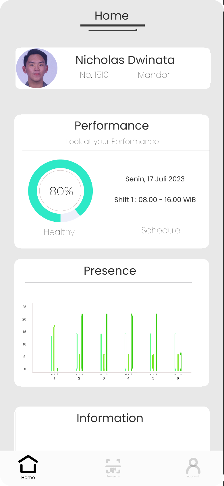
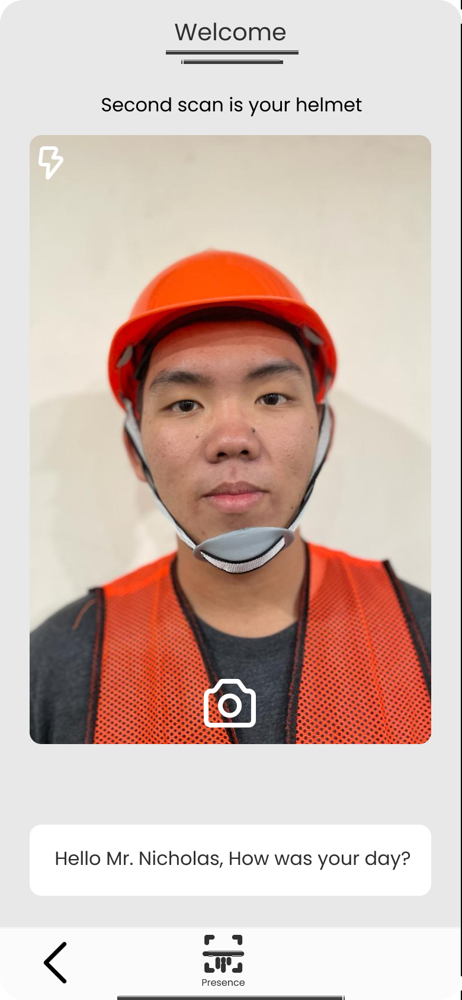
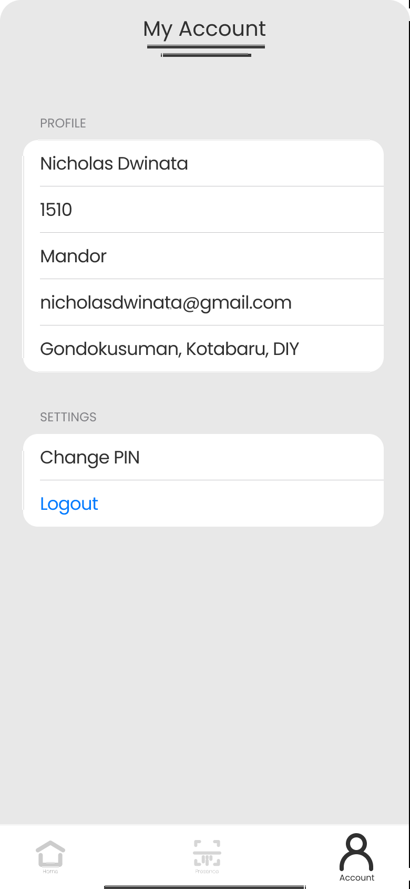
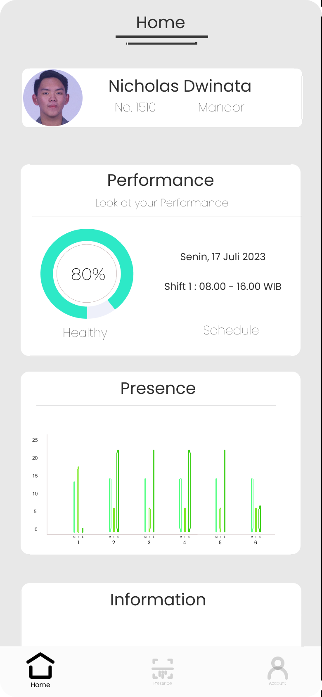
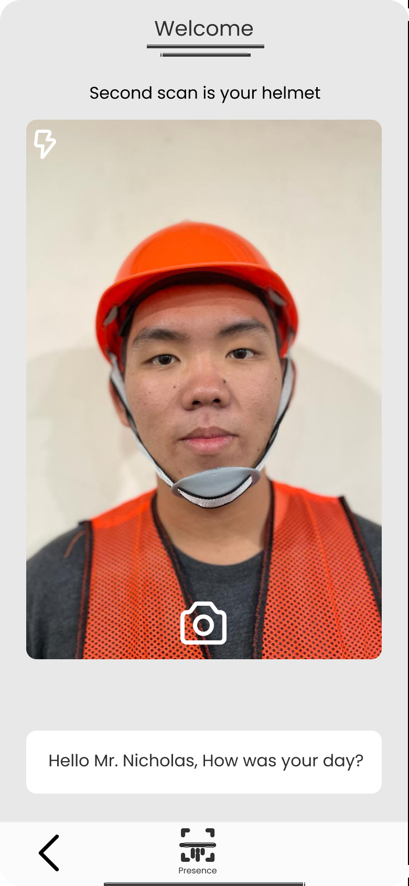
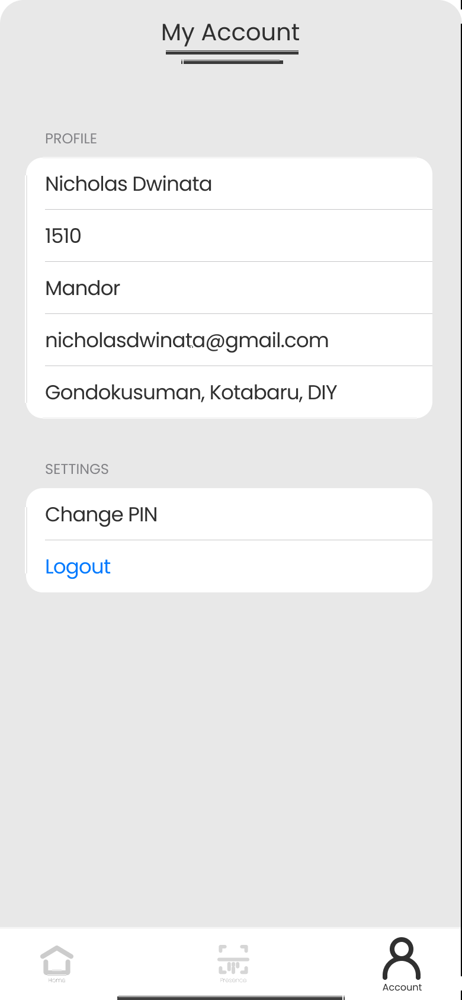

Overview
Kerti Kawista is a mobile application concept designed to support employee attendance and safety compliance monitoring in construction projects. The application focuses on ensuring that workers meet K3 (Occupational Health and Safety) requirements before starting work, while also simplifying attendance recording for project management.
Problem
In many construction projects, attendance recording and safety checks are still handled manually. This process is prone to human error, inefficient data recording, and lack of real-time monitoring of workers’ compliance with safety equipment standards.
Solution
Kerti Kawista provides a mobile-based solution that combines employee attendance with K3 safety checks. The application allows workers to record attendance while verifying required safety equipment, and enables project managers to monitor compliance through a clear and structured interface.
My Contribution
- Designed end-to-end user interface and user experience flows using Figma
- Created wireframes and high-fidelity UI designs for attendance and K3 checking features
- Defined user flows for workers, supervisors, and project managers
- Ensured UI consistency, usability, and clarity across all screens
- Applied basic UX principles to improve efficiency and reduce user error
UI Preview
 





Project Links
What I Learned
Through this project, I learned how to design a mobile application interface based on real-world operational needs, particularly in the construction industry. I improved my understanding of user-centered design, role-based user flows, and how UI/UX decisions can directly impact efficiency and safety compliance.
This project also strengthened my ability to translate system requirements into clear visual designs and structured interaction flows that are easy to understand and use.